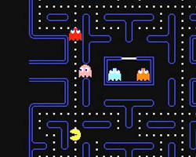
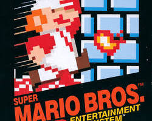
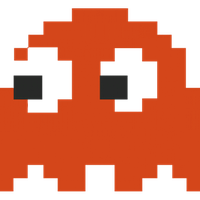
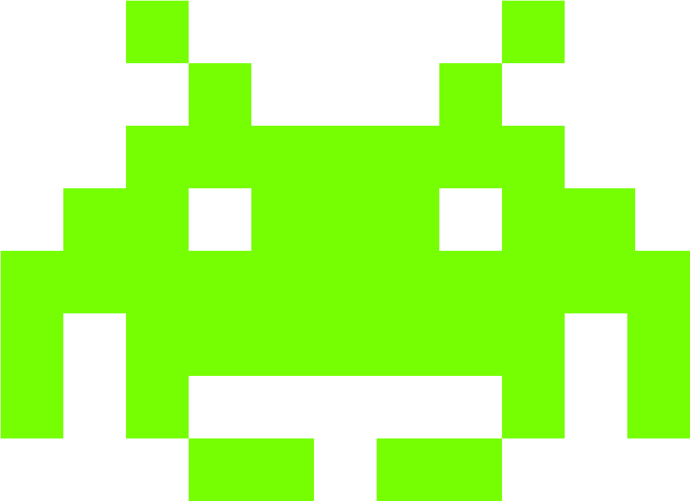

REDESCUBRA A MAGIA DOS JOGOS CLÁSSICOS
Embarque em uma jornada nostálgica pelo universo dos jogos retro e explore a riqueza dos títulos criados perto de você. Encontre informações e curiosidades para reviver essa paixão!
🎮 Selecione Uma Música Para Tocar
Jogos Emblemáticos




- O primeiro console foi criado em 1972
- Pac-man é o game de fliperama mais jogado de todos os tempos
- Mario era um carpinteiro em suas primeiras aparições
- Tetris vendeu mais de 500 milhões de cópias
- Tetris foi criado por um cientista soviético
- O criador do Pac-Man se inspirou em... pizza!
- Os fantasmas de Pac-Man tem inteligência artificial
- Donkey Kong quase foi um jogo do Popeye
Curiosidades


Recordes
| Jogo | Recorde | Jogador |
|---|---|---|
| Pac-man | 3.333.360 | Billy Mitchell |
| Donkey Kong | 1.270.000 | Steve Wiebe |
| Space Invaders | 184.870 | Mark Hays |
Tela Retrô
Curta o melhor dos games junto com essa jornada pelo passado.